Přednosti
- Přehledné GUI
- Import a export do mnoha formátů a služeb
- Upozornění na narozeniny
- Jednoduché a intuitivní ovládání
Obsah
- Hlavní okno aplikace
- Správa kontaktů
- Správa skupin
- Notifikace událostí
- Import a Export
- Nastavení
- Seznam klávesových zkratek
Hlavní okno aplikace
Hlavní okno aplikace poskytuje uživateli komfortní práci a správu kontaktů. Levý panel obsahuje seznam skupin, uprostřed se nachází seznam kontaktů a pravá strana obsahuje přehledně údaje o konkrétním kontaktu.
Rychlé menu v horní části okna umožňuje globální akce jako je Import/Export kontaktů, nastavení programu a real-time filtrování kontaktů.
Rovněž je možno přidat nový kontakt a novou skupinu. Veškeré globální akce se také nachází k hlavní menu aplikace nahoře a lze je také vyvolat pomocí klávesových zkratek.
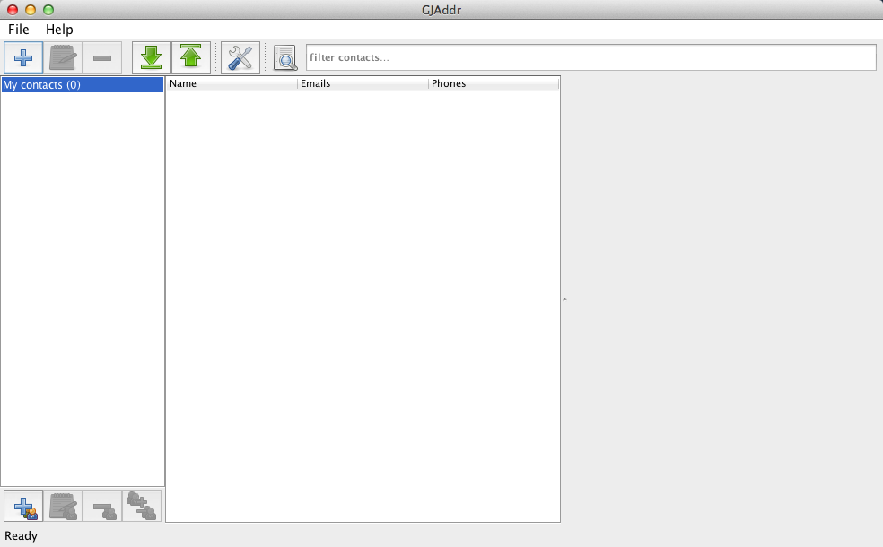Detail kontaktu
Zvolením skupiny se zobrazí seznam kontaktů v této skupině. Všechny kontakty jsou automaticky členy skupiny "My contacts", bez ohledu na to, zda uživatel používá vlastní skupiny či nikoliv.
Výběrem kontaktu z tabulky uprostřed se zobrazí detail kontaktu, který obsahuje všechny informace o zvoleném kontaktu, jak je vidět na obrázku níže.
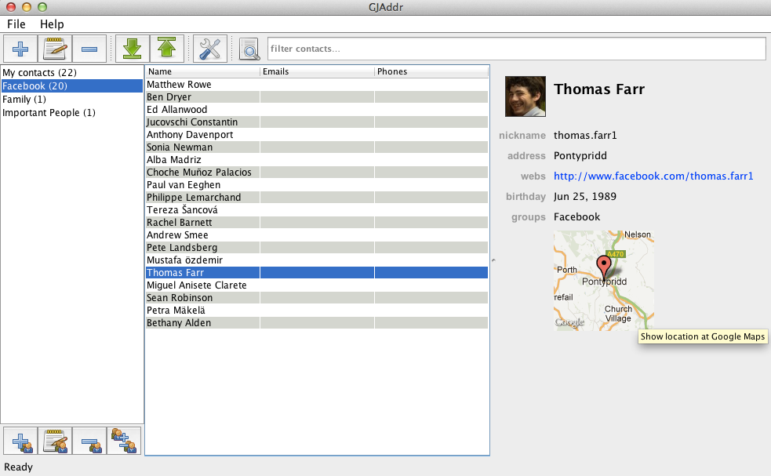Všechny položky detailu kontaktu u nichž to má smysl jsou klikatelné, to znamená, že kliknutím na adresu nebo mapku se zobrazí lokace na Google Maps, poklikáním na URL se otevře prohlížeč s danou adresou a stejně je tomu i u emailu, kdy je otevřen emailový klient.
V detailu lze také provést změnu fotografie kontaktu, které se provádí kliknutím na fotografii, kdy se zobrazí dialog pro výběr nové fotografie.
Detail obsahuje veškeré zadané položky, pokud je některá hodnota nezadána, je tento údaj v detailu skryt.
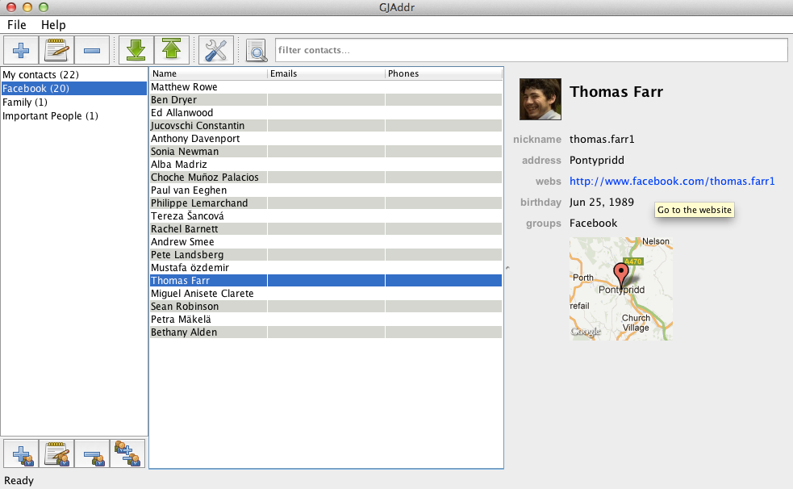Filtrování kontaktu
Uživatel má možnost pomocí filtrovacího pole filtrovat aktuálně zvolenou skupinu kontaktů. Filtrování je prováděno okamžitě, takže uživatel vidí po zadání každého znaku aktuální seznam kontaktů. Při zadávání rovněž nezáleží na velikosti písmen ani diakritice, program toto nerozlišuje.
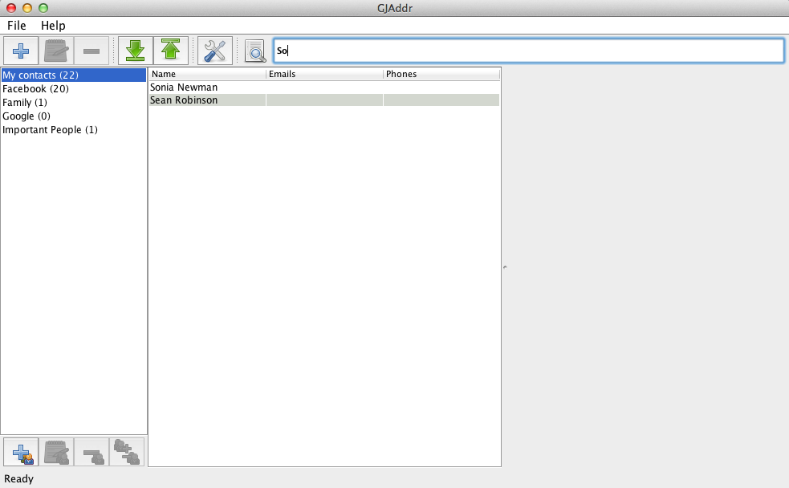Správa kontaktů
Správa kontaktů poskytuje uživateli veškeré akce a možnosti, které od adresáře tohoto typu očekává. Pro lepší uživatelovu orientaci je přidání i editace kontaktu rozdělena do záložek s jasně definovanými názvy.
Přídání kontaktu
Aplikace vyžaduje jako minimální údaj zadání jména, přijmení nebo přezdívku. Pokud uživatele nezadá ani jeden z těchto údajů, není možné kontakt uložit, na což je uživatel upozorněn. Svátek uživatel lze nastavit manuálně nebo jej nechat získat z databáze automaticky. Pokud není svátek zadán, je získáno datum podle zadaného jména.
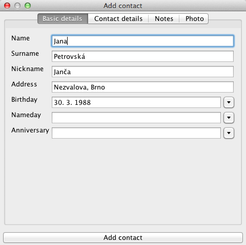Druhá záložka slouží pro zadávání kontaktních údajů jako je email, telefon, adresa nebo kecálků. Zadané údaje již nejsou povinné, ale každý údaj na této záložce prochází validací a pokud neodpovídá obecně definovaným pravidlům na internetu, není uživateli umožněno uložené do chvíle, než jsou údaje zadány správně.
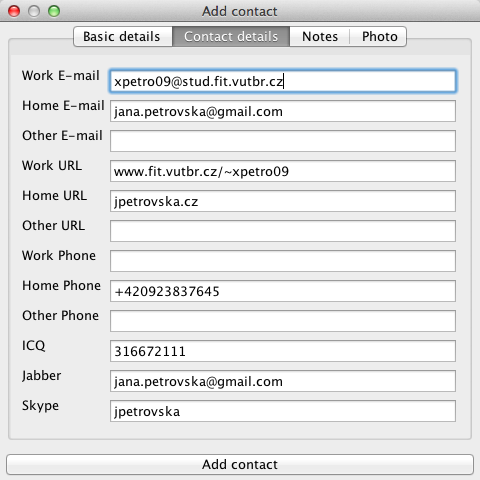Ke každému uživateli je možno uložit poznámku prakticky neomezené délky, tvaru a stylu.
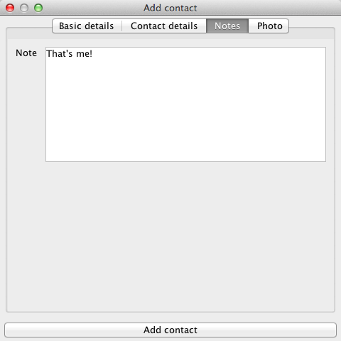Poslední záložka slouží k uložení fotografie ke kontaktu. Kliknutím na fotografii se zobrazí dialog s možností výběru fotografie, který podporuje výběr fotografie všech známých formátů. Po výběru je fotografie je zmenšena na podporovaný formát a uložena. Pokud není foto vybráno, je použite implicitní ikona.

Po uložení kontaktu dojde k jeho přídání do hlavní skupiny "My contacts" a zobrazení nového kontaktu v detailu napravo.
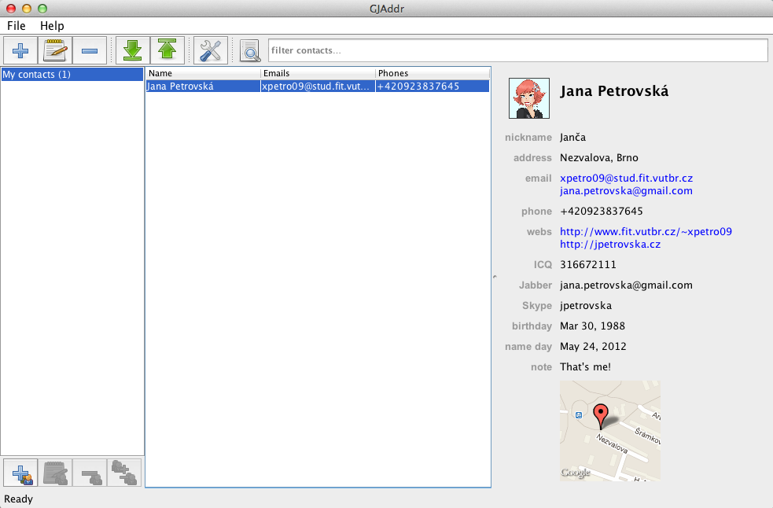Editace kontaktu
Editace kontaktu se provádí ve stejném okně jako přidání nového kontaktu. Toto okno je možno vyvolat dvojitým kliknutím na kontakt nebo pomocí kontextové menu stistknutím pravého tlačitka myši a zvolením editace.

Smazání kontaktu
Mazání kontaktu se provádí výběrem jednoho či více kontaktů z tabulky kontaktů. Kontakty lze smazat stiskem klávesy DEL nebo opět výběrem možnosti smazat z kontextové nabídky po kliknutí pravým tlačítkem myši. Před samotným smazáním je uživatel vyzván k potvrzení své volby, a poté dojde k nenávratnému smázání zvolených kontaktů.
Správa skupin
Uživatel má kromě správy kontaktů také možnost své kontakty členit do skupin s vlastním názvem. Nad skupinami lze provádět pak skupinové operace jako je Import/Export apod.
Přidání skupiny
Novou skupinu lze přidat třemi různými způsoby. Prvním je použití globální klávesové zkratky, která je uvedena v závěru této dokumentace. Dále lze použít tlačítko pro přidání nové skupiny v levém dolním rohu aplikace, nebo lze použít kontextové menu stiskem pravého tlačítka nad seznamem skupin. Nová skupina musí mít unikátní název v rámci celé aplikace, pokud tomu tak není, není přidání nové skupiny úspěšné.
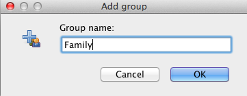Po úspěšném přidání nové skupiny se nová skupina zobrazí v seznamu skupin a neobsahuje žádný kontakt, což signalizuje číslo 0 v závorce u této skupiny a také prázdný seznam kontaktů.
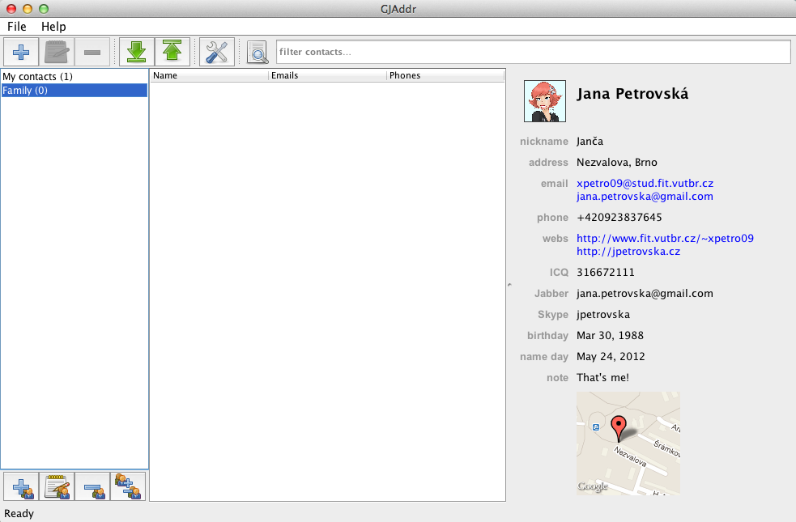Editace skupiny
U skupiny lze také měnit její jméno, tuto akci lze provést dvojklikem na název skupiny nebo prostřednictvím kontextového menu. Stejně jako u přidávání skupiny platí, že jméno musí být unikátní.
Smazání skupiny
Mazání skupiny lze provést stiskem tlačítka DEL, které provede smazání skupiny. Stejnou akci lze provést také prostřednictvím kontextového menu.
Přídání kontaktů do skupiny
Přidání kontaktů do skupiny lze provést dvěma různými způsoby. Prvním způsobem je přidání na úrovni skupiny, kdy po stisku pravého tlačítka nad nějakou skupinou se zobrazí kontextové menu, kde zvolíme položku Spravovat skupinu a zobrazí se nám stejné jako níže. Okno obsahuje seznam všech kontaktů v dané skupině. Označením či odznačením lze provést přiřazení do dané skupiny.
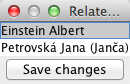Druhou možností, jak přiřadit kontakt do skupiny, je vyvolání kontextového menu nad kontaktem, kde se nachází položka Spravovat skupiny kontaktu. Po zvolení této položky je zobrazen seznam všech skupin v a označením či odznačením lze spravovat skupiny, v nichž se nachází daný kontakt.
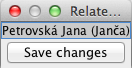Obě možnosti přidávání kontaktů do skupiny jsou navzájem ekvivalentní a jejich provedením lze dosáhnout stejného výsledku jako je například uvedeno na obrázku níže.
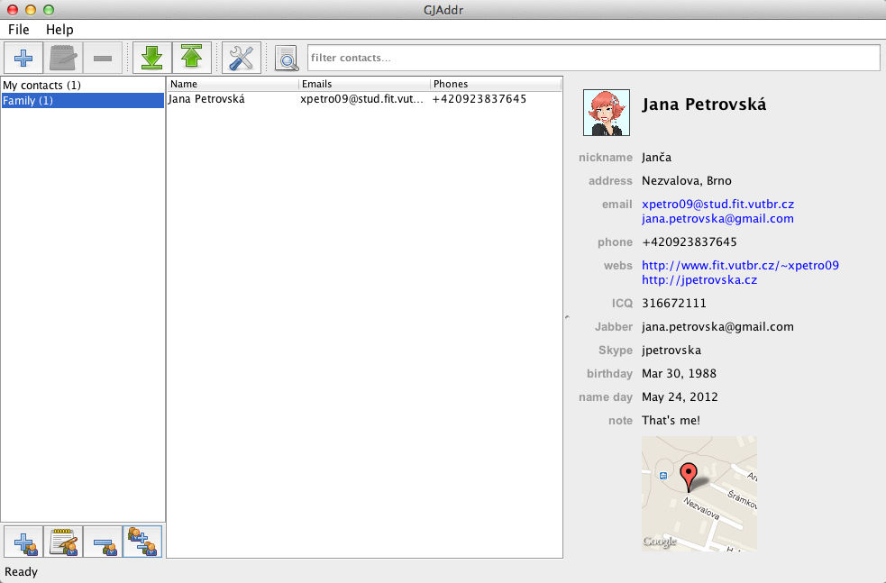Notifikace událostí
Program zobrazuje také upozornění na blížící se narozeniny, výročí a svátky uživatelů, u nichž je tento ůdaj zadán, abyste na žádnou z těchto údálostí nezapomněli.
Interval zobrazení upozornění si lze zvolit v nastavení aplikace, které je popsáno dále v tomto manuálu. Při zobrazení okna s upozorněním lze zvolit možnost "Dále nezobrazovat", která způsobí, že zobrazená upozornění nebudou již dále zobrazována. V opačném případě budou blížící se události zobrazovány vždy při spuštění aplikace až do odmítnutí nebo vypršení.
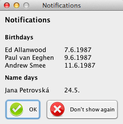Import a Export
Aplikace umožňuje importovat či exportovat vaše kontaktu z a do několika různých formátů. Obě akce lze vyvolat jednak prostřednictvím globální nabídky, ale také z kontextového menu nad skupinou či nad seznamem kontaktů.
Import
Při importu lze zvolit z několika možností. Především je nutné zvolit importovaný formát, aby program věděl, jak má importovaný soubor interpretovat. Dále je třeba zvolit skupinu, do níž se mají kontakty importovat. V případě nezvolení skupiny budou automaticky importovány do hlavní skupiny. Stiskem tlačítko import budete vyzvání ke zvolení souboru s daty. Pokud je akce importu vyvolána nad skupinou, dojde přednastavení aktuálně vybrané skupiny.
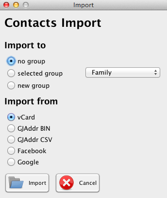Pokud importujeme data z Facebooku, je nutné nastavit účet prostřednictvím nastavení aplikace před samotným importem a následně potvrdit spuštění importu. Pokud máme tyto ůdaje již přednastaveny, není tato výzva zobrazována.
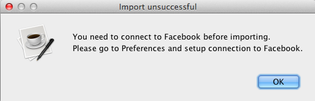Samotný průběh importu kontaktů lze sledovat v levé dolní části aplikace, kde se zobrazuje progress bar s aktuálním stavem právě probíhající akce. Tuto akci lze zrušit stiskem tlačítka Cancel, které zastaví prováděnou akci po naimportování právě zpracovávaného kontaktu. Doposud nahrané kontakty jsou uloženy.
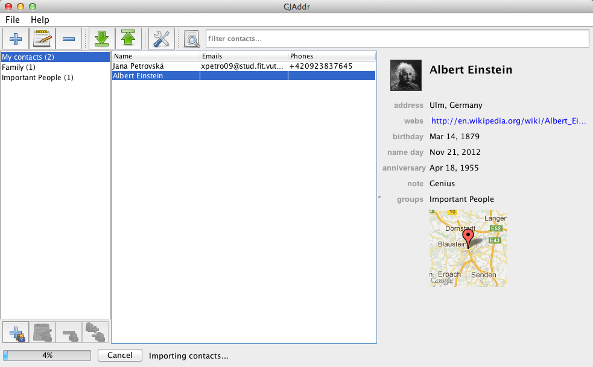O výsledku importu kontaktů je uživatel informován dialogem, který zobrazuje informace o právě proběhlé akci společně s počtem nahraných kontaktů.
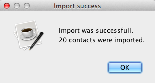Po úspěšném importu lze najít nahrané kontakty ve zvolené skupině. Výsledek importu z Facebooku vypadá například takto.
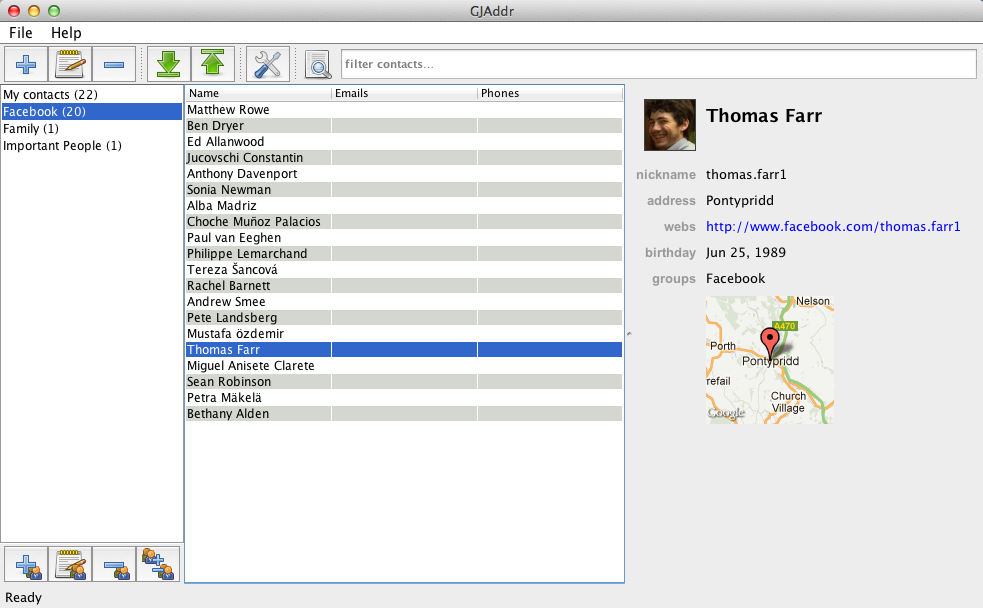Export
Aplikace rovněž umožňuje export kontaktů do některého z podporovanách formátů. Export lze vyvolat prostřednictvím tlačítka v globální nabídce, nebo přes kontextovou nabídku. Export je stejně jako import variabilní a umožňuje exportovat jak vybrané kontakty, tak také celé skupiny kontaktů.
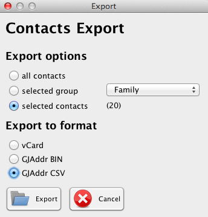Po stisku tlačítka Export je uživatel vyzván ke zvolení názvu souboru a následně dojde k vyexportování požadovaných kontaktů.
Nastavení
Nastavení aplikace je pro větší přehlednost rozděleno do několika záložek a seskupeno podle logického významu. První záložka obsahuje nastavení účtu na Facebooku a Googlu, kdy je uživatel po stisku jednoho z tlačítek vyzván k zadání svýj přihlašovacích údajů. Získaná data jsou následně zašifrována.
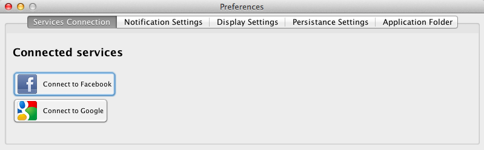Další záložka slouží pro nastavení frekvence připomínek blížících se událostí. Na základě zvolené frekvence je pak zobrazeno při spuštění aplikace okno s notifikací.
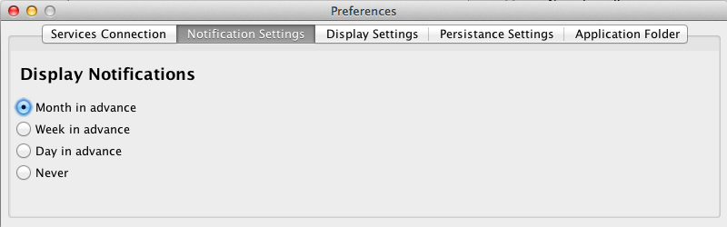Uživatel má dále také možnost zvolit si pořadí zobrazování pořadí jméno-příjmení napříč aplikací. Jedná se o seznam kontaktů, detail apod. Při změně tohoto nastavení dojde k okamžitému použití na všech místech.
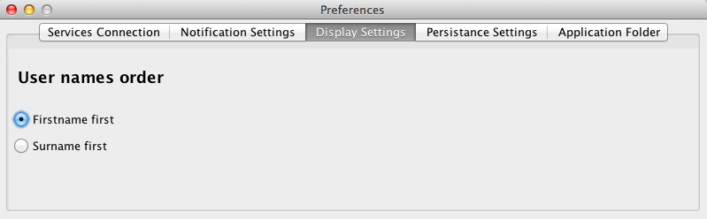Způsob uložení dat lze změnit v předposlední záložce. Implicitně je používáno uložené do binárního formátu, které je podstatně rychlejší, uživatelé však možná uvítají možnost uložení do lépe čitelného formátu XML. Tento formát je především při spuštění aplikace pomalejší, ale lze jej ručně editovat či dále zpracovávat.
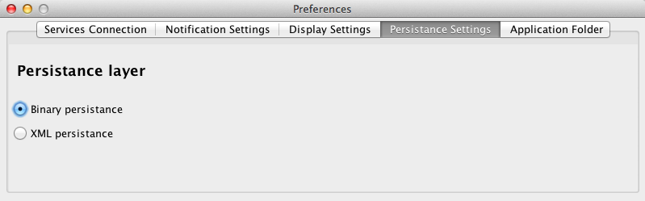Jako poslední si lze zvolit umístění souborů aplikace, implicitně je používám domovský adresář.
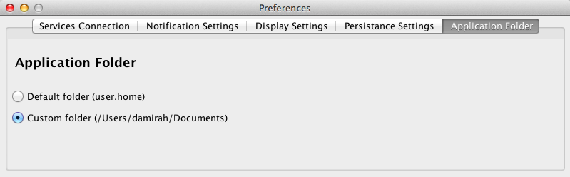Seznam klávesových zkratek
| Zkratka | Akce |
|---|---|
| F1 | Nápověda |
| Ctrl + A | O programu |
| Ctrl + P | Nastavení |
| Ctrl + Q | Ukončení programu program |
| Alt + I | Import kontaktů |
| Alt + E | Export kontaktů |
| Ctrl + N | Nový kontakt |
| Ctrl + E | Upravit kontakt |
| Ctrl + M | Správa skupin/kontaktů |
| Ctrl + G | Nová skupina |
| Ctrl + R | Přejmenování skupiny |
| Del | Smazání vybrané skupiny nebo kontaktu |